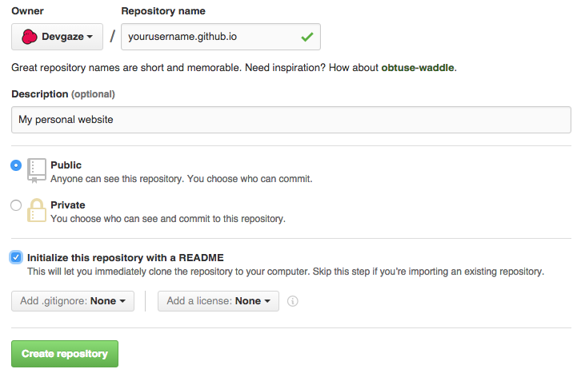
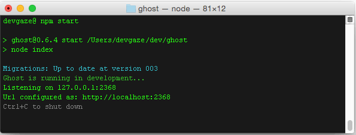

In the last 5-8 years, I am not sure for how many times did I try to start to blog. It was always something in my way; not sure what to write about, not fully satisfied with blogging platform, editor sucked, deployment was a pain, etc.
In short it was just a lack of my interest.
Now, when I am going through a lot of changes both in my professional and personal life, there's a publisher's spark in me that feels right. So I took one day to do a research on blog engines and static site generators, and it was not that hard to do it.
I've found a setup that fits me quite well, combined out of these 3 components:
NOTE: Even though Buster is originally written by Akshit Khurana, I am using Josh Gerdes's fork as it contains few important updates and, at the time of writing this article, it is 4 commits ahead of Akshit's.
Setup
Before we start, we have to meet some requirements.
Ghost is built using Node.js and it will need npm package manager for installation and server startup.
Buster is Python package, so we'll use
pip.Using GitHub expects you have
gitinstalled also.Also you will need to install latest XCode for some libraries, unless you already have it.
Once you believe you are all set, just do a sanity check:
Prepare a GitHub Page
Assuming all went well head over to https://github.com/ and sign in if needed. Then in upper right corner click on
+sign and choose New repository.Then type in your GitHub username followed by .github.io (check the picture below) and click Create repository

Install Ghost
Let's create our project root first
mkdir ~/dev/ghostNow go to Ghost's download page and download the latest release
Unzip it inside
~/dev/ghostInstall Ghost with
--productionflagnpm install --productionWhen it's all done, run Ghost using
npm start
Now you can visit your Ghost site at http://localhost:2368 and your admin part at http://localhost:2368/ghost/
Install Buster
Buster uses application called
wgetand we have to make sure it is installed on our system before we proceed.brew install wgetAnd now we are all set for Buster installation
pip install busterNow we just need to connect buster with our GitHub Pages, make sure you are inside
~/dev/ghost
Now Buster will create new folder static and initialise it with provided repository.
Deploying content to GitHub
- Head over to ghost and create a post or two.
Then in your terminal type
buster generateAfter generate finishes converting Ghost content into static pages, you can preview them using
buster previewand then visiting http://localhost:9000/
Once you are satisfied with the output, go ahead and deploy it to GitHub
buster deploy
And, that's it!
Further actions
- Add custom domain to your website
- Change the look and feel of your website with predefined themes
- Add contact form to your website
If you have any questions or suggestions just drop it into comment, I'd love to explain or learn something new.
Cheers!
(Image author Poppet with a camera - found on Flickr )